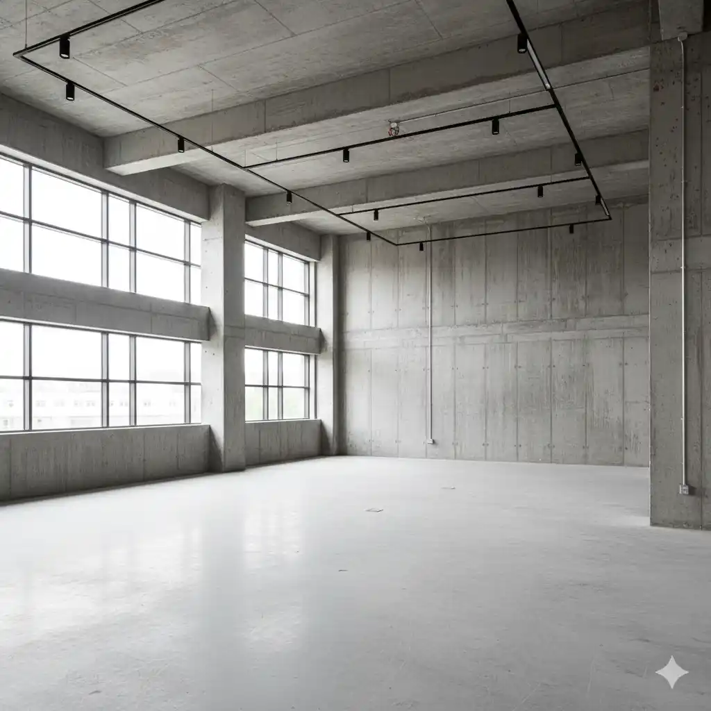
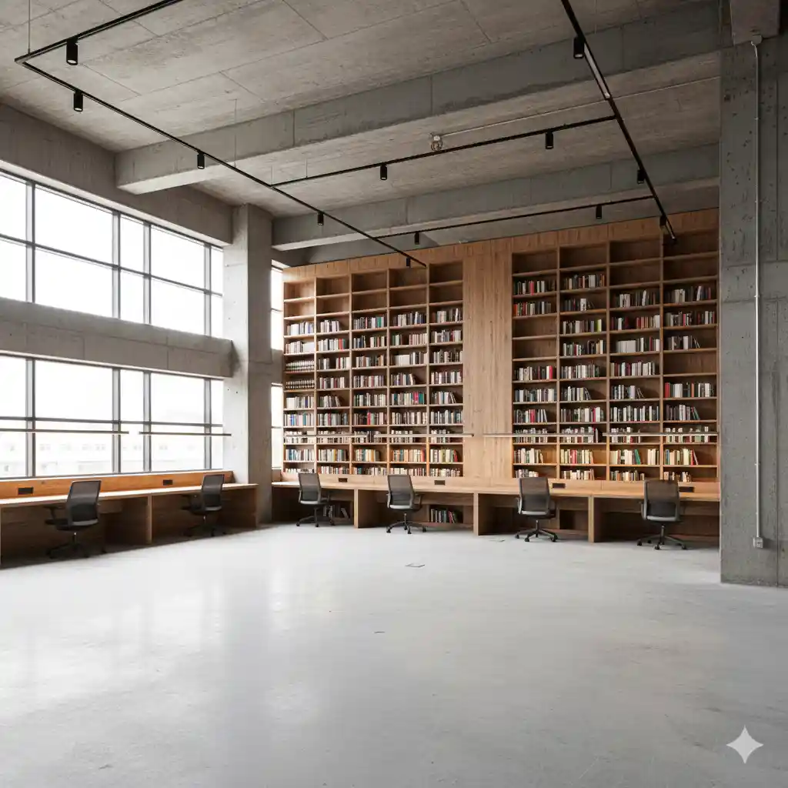
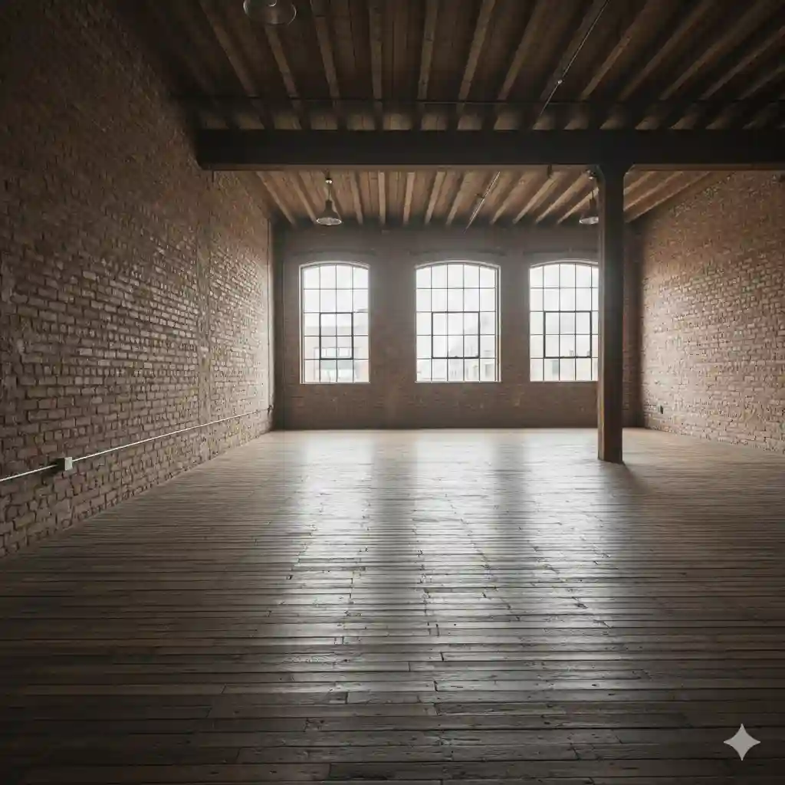
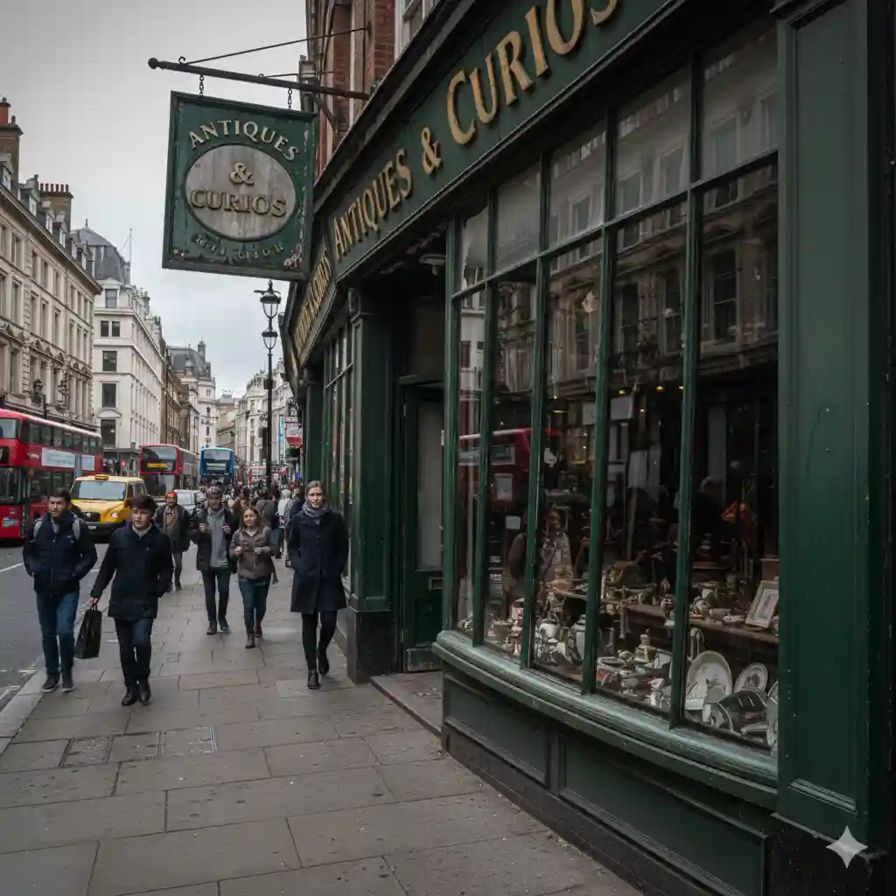

The Grand Victorian Revival – Didsbury
The Problem: A neglected 1880s villa had suffered significant water ingress, leading to rot in the primary structural floor joists and the collapse of a hand-carved mahogany staircase. The client was faced with a "catch-22": they couldn't fix the roof without safe access, but the interior floors were too weak to support standard scaffolding. Furthermore, the local conservation officer mandated that any replacement joinery must be indistinguishable from the original 19th-century craft.


The Solution: We orchestrated a multi-stage recovery. First, our scaffolding team designed a specialist "bridging" scaffold that transferred the weight of the structure onto the external load-bearing walls, bypassing the fragile internal floors. This allowed us to install a temporary "tin hat" roof to stop further decay. Once the site was dry, our master joiners took over. We sourced ethically harvested Sapele Mahogany to replicate the missing balustrades. Using 3D scanning, we mapped the remaining original spindles and turned new ones in our Manchester workshop to within a 0.5mm tolerance of the originals.
The Result: We didn't just repair a house; we preserved a piece of history. The client now has a structurally sound home with a staircase that serves as a breathtaking centerpiece, finished with traditional French polish to match the surviving woodwork perfectly.
The Sky-High Office Integration – Salford Quays
The Problem: A high-end marketing agency moved into a penthouse suite with 6-metre high concrete walls and an "industrial-chic" brief. They required a massive, 12-station Oak and Steel library wall that would serve as both storage and a sound-dampening acoustic barrier. The challenge was two-fold: the sheer height made traditional installation dangerous, and the massive timber panels would not fit in the building’s service elevators.
 
The Solution: We used our unique dual-trade capability to solve the logistics. We erected an internal Birdcage Scaffolding system with integrated hoist points. This allowed us to lift the oversized European Oak components—pre-fabricated in sections—directly into place. To solve the acoustic problem, we integrated hidden felt-lined cavities behind the oak panelling. The desks were crafted with "live-edge" oak tops to soften the industrial concrete, and all wiring was concealed within the bespoke joinery frames for a wireless, minimalist finish.
The Result: The agency now works in a space that balances the "cold" industrial look with the "warmth" of artisan oak. The library wall acts as the functional heart of the office, providing privacy and sound management without sacrificing the open-plan feel.
The Marine-Grade Orangery – Knutsford
The Problem: The client’s existing softwood conservatory had rotted beyond repair within just seven years due to its exposed position and poor drainage. They wanted a replacement that offered the same classic "timber look" but could withstand the British weather for decades. The site was also situated on a steep slope, making the exterior of the structure inaccessible for regular maintenance.
The Solution: We proposed Accoya—a chemically modified timber that is virtually rot-proof. To manage the slope, we built a stepped-base scaffold that gave our installers a level, safe working platform around the entire perimeter. The joinery was designed with modern "drip-grooves" and concealed drainage channels to ensure water never sat on the wood. We utilized high-performance microporous paints applied in a controlled environment before on-site assembly. This ensured that every joint was sealed, even in the areas that would be inaccessible once the scaffold was removed.
The Result: A luxury orangery with a 50-year timber guarantee. By combining structural access with high-performance materials, we delivered a build that requires significantly less maintenance than a traditional wooden extension.
The Cantilevered Kitchen – Ancoats
The Problem: In a converted cotton mill, the client wanted a floating kitchen island made from American Black Walnut. The floor, however, was a historic timber-frame construction that couldn't support a 400kg stone-topped island in the center of the room. Additionally, the apartment was on the 4th floor with a narrow spiral staircase—the only entrance.


The Solution: We worked with structural engineers to design a hidden steel "cradle" that anchored into the brick walls rather than the floor. To get the materials up, we set up an external pulley scaffold outside the main window. This allowed us to winch the heavy walnut slabs and the marble countertop directly into the loft. The joinery team then "wrapped" the steel cradle in hand-selected, book-matched Walnut veneer, creating the illusion of a massive, solid-timber block floating 20cm off the ground.
The Result: A kitchen that defies gravity. By using scaffolding to bypass the stairwell and engineering-grade joinery to bypass the floor limitations, we achieved a design that other contractors claimed was "impossible."
The Historic Commercial Facade – Deansgate
The Problem: A high-end boutique located in a Grade II listed building was facing a closure order due to a structurally failing storefront. The original 1920s timber lintels had bowed under the weight of the masonry above, causing the massive plate-glass windows to crack. The client needed a complete replacement of the structural timber facade, but because the shop was located on one of Manchester’s busiest thoroughfares, the city council prohibited any ground-based scaffolding that would block the pavement for more than 48 hours.


The Solution: This project required a "surgical" approach to both access and joinery. We designed and pre-fabricated a bespoke gantry scaffold in our yard, which was then erected overnight. This "walk-through" scaffold allowed pedestrians to pass safely underneath while providing our team with a rock-solid platform to support the building's weight. Once the masonry was needle-shored, our joiners removed the decaying pine lintels and replaced them with engineered Iroko beams. We chose Iroko for its immense load-bearing capacity and natural resistance to city pollution. Every decorative molding and corbel was hand-carved in our workshop to mirror the 1920s geometry, ensuring the Conservation Officer’s requirements were met in full.
The Result: The shopfront was restored to its former glory without a single hour of lost footfall for the business. The new structural joinery is hidden behind an aesthetically perfect heritage facade that is now rated to last for another century.
The "Space-Saver" Geometric Staircase – Altrincham
The Problem: A family living in a cramped Victorian terrace wanted to convert their attic into a master suite. However, the existing landing was so small that a standard staircase would have blocked the entrance to the bathroom and the main bedroom. Every other contractor had told them a conversion was impossible without losing a bedroom. The client needed a staircase that was "invisible"—occupying the smallest possible footprint while remaining compliant with strict UK Building Regulations regarding pitch and headroom.


The Solution: We solved this through mathematical joinery and specialized internal access. To work in the tight, vertical "chimney" of the new stairwell, we built a custom internal tower scaffold that occupied only 1 square metre, allowing our team to safely cut through the ceiling joists. We then designed a tapered Helical staircase crafted from White Ash. By using a "winder" design, we turned the stairs around a central spine that also doubled as a hidden storage cupboard for the landing. The treads were recessed into the stringers to save every millimetre of width. We used Ash for its incredible strength-to-weight ratio, allowing for thinner, more elegant components that didn't feel bulky in the small space.
The Result: We unlocked an entire floor of living space without sacrificing a single centimetre of the existing bedrooms. The staircase is now the home's most talked-about feature—a sculptural piece of furniture that performs a vital structural function.
×